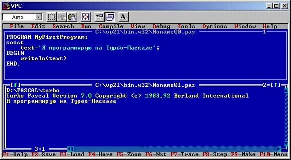

|
|
|
|
Ваша первая программа
Для знакомства с языком Турбо Паскаля попробуем составить несложную программу, осуществляющую вывод какого-либо сообщения на экран ПК. Пусть это будет фраза «Я программирую на Турбо Паскале». Вот возможный вариант такой программы:
Пример 2.1
Program My_First_Program;
const
Text = 'Я программирую на Турбо Паскале';
begin
WriteLn(Text);
end.
Прежде всего проанализируем форму представления текста. В программе шесть строк. Строки программы обычно выделяют некоторые смысловые фрагменты текста и могут не связываться с конкретными действиями в программе: расположение текста программы по строкам - дело вкуса программиста, а не требование синтаксиса языка. Ту же программу можно было бы написать, например, так:
Program My_First_Program; const Text =
'Я программирую на Турбо Паскале';begin WriteLn(Text); end.
В отличие от некоторых других языков программирования пробел в языке Турбо Паскаль используется как разделитель отдельных конструкций языка, поэтому программа
PROGRAMMy_First_Program;constText=
'Я программирую на Турбо Паскале';BEGINWriteLn(Text);end.
будет неверной.
В Турбо Паскале игнорируется различие в высоте букв (заглавные или строчные), если только это не связано с текстовыми константами. Начало программы могло бы, например, выглядеть так:
program my_first_program;
Теперь о смысле отдельных строк. Первая строка
Program My_First_Program;
начинается словом Program и содержит объявление имени программы. Слово Program зарезервировано в Турбо Паскале, т.е. не может использоваться ни в каких иных целях, кроме как для объявления имени программы. В Турбо Паскале имеется множество зарезервированных слов (см. гл.З). Любое из них нельзя использовать в качестве идентификатора (имени) какого-либо объекта программы - переменной, константы и т.д. Замечу, что редактор среды Турбо Паскаля обычно выделяет зарезервированные слова цветом. В связи с этим в тексте книги эти слова выделены жирным шрифтом. Поскольку имя программы никак в дальнейшем не используется, требование его объявления кажется излишним. В Турбо Паскале можно опускать объявление имени оператором Program без каких-либо последствий для программы.
В рассматриваемом примере имя My_First_Program есть не что иное, как английская фраза «Моя Первая Программа», но только написанная без пробелов - пробел является разделителем и не может использоваться произвольно (вместо пробелов в идентификаторах разрешается использовать символ подчеркивания).
Первая строка заканчивается особым разделителем - точкой с запятой. Этот разделитель в языке Турбо Паскаль отмечает конец оператора или описания. Использование особого разделителя позволяет располагать несколько операторов на одной строке.
Вторая строка
const
содержит единственное зарезервированное слово const, означающее, что далее будут описаны одна или несколько констант (CONSTants - константы). Константами в языке считаются такие объекты программы, которые не могут изменять своего значения. В отличие от многих других языков программирования, константа в Турбо Паскале может иметь собственное имя, что соответствует принятой в научных и инженерных расчетах практике именования часто используемых констант. Например, со школы мы помним о существовании константы п—3.14159265. При обработке программы имя константы pi будет заменяться компилятором на ее значение.Описать константу в Турбо Паскале - значит указать ее имя и значение. Такое указание содержится в третьей строке
Text = 'Я программирую на Турбо Паскале';
в которой константе с именем Text присваивается в качестве значения строка символов «Я программирую на Турбо Паскале».
В Турбо Паскале могут использоваться константы разного типа - целые или вещественные числа, символы, строки символов, массивы и т.д. Признаком того, что Text является константой типа строка символов, служат два апострофа, обрамляющих строку, причем сами апострофы этой строке не принадлежат, а лишь указывают компилятору на то, что все заключенные в них символы следует рассматривать как единое целое - текстовую константу. Если понадобится включить сам апостроф в текстовую константу, достаточно его написать дважды подряд. Например, описание
Text = 'Турбо' 'Паскаль';
создаст константу со значением
Турбо'Паскаль
Все три первые строки не связаны с какими-либо конкретными действиями при работе программы. Они сообщают компилятору некоторые сведения о самой программе и использующихся в ней объектах. Эта часть программы называется разделом описаний. Зарезервированное слово begin в четвертой строке сигнализирует компилятору о начале другой части программы - раздела операторов. В нашем примере этот раздел содержит оператор
WriteLn(Text);
который, собственно, и выводит сообщение на экран компьютера.
Завершает всю программу зарезервированное слово end с точкой. Точка оповещает компилятор о конце текста программы. За сочетанием end. можно размещать какой угодно текст - он не будет обрабатываться компилятором.
Перед тем как попробовать откомпилировать и исполнить нашу программу, обсудим ее единственный исполняемый оператор
WriteLn(Text);
Любопытно, что в Паскале вообще и Турбо Паскале, в частности, нет специальных операторов ввода-вывода. Для обмена информацией с окружающим миром в программах, написанных на языке Турбо Паскаль, используются специальные стандартные процедуры. Таким образом, по своей сути оператор
WriteLn(Text);
является оператором обращения к встроенной процедуре вывода данных (свое название она получила от WRITE LiNe - записать строку).
Понятие процедуры (см. гл.8) - одно из центральных понятий Турбо Паскаля. Процедура - это некоторая последовательность операторов, к которой можно обратиться по имени. Всякий раз, когда мы называем в операторе имя процедуры, инициируется последовательность запрограммированных в ней действий.
Процедура WriteLn относится к стандартным или встроенным процедурам Турбо Паскаля. Стандартная процедура не нуждается в предварительном описании, она доступна любой программе, в которой содержится обращение к ней. Разница между оператором вывода и обращением к процедуре вывода состоит в том, что имя процедуры вывода, как и любой другой процедуры Турбо Паскаля, не является зарезервированным словом, а следовательно, пользователь может написать свою собственную процедуру с именем WriteLn. Впрочем, эта возможность для большинства пользователей остается лишь языковой тонкостью и очень редко используется на практике.
Процедура WriteLn - одна из немногих процедур Турбо Паскаля, при обращении к которым допускается использование произвольного числа параметров. Параметры передаются процедуре в виде списка, располагающегося в круглых скобках сразу за именем процедуры. В нашем примере процедуре передается единственный параметр -константа Text. Как мы увидим дальше (см. гл.5), самым первым параметром при обращении к процедуре WriteLn можно указать адрес приемника информации - устройство или дисковый файл, в который направляется вывод. Таким способом программист может легко переадресовать вывод данных. Если, как это сделано в нашем примере, адрес вывода не указан, вывод направляется на экран дисплея.
Анализируя всю программу в целом, мы обнаружим, что четыре использовавшихся в ней слова (Program, const, begin и end) являются зарезервированными. Слово WriteLn, как уже отмечалось, не относится к зарезервированным, но вряд ли может возникнуть необходимость переопределить его, так как в этом случае программа лишится мощного и удобного средства вывода данных. Два слова My_First_Program и Text служат идентификаторами (именами) некоторых объектов программы. Программист может использовать в качестве идентификаторов любые последовательности символов, которые удовлетворяют следующим ограничениям:
Как и всюду в программе, в идентификаторах игнорируется разница в высоте букв, поэтому, например, идентификаторы Text, text и TEXT с точки зрения компилятора идентичны.
Теперь попробуйте выполнить программу. Для этого после набора ее текста нажмите Ctrl-F9. Если Вы не ошиблись при вводе текста, то спустя несколько секунд заметите быструю смену изображений на экране: сразу после загрузки программы Турбо Паскаль очищает экран, предоставляя его в распоряжение работающей программы пользователя. Такой экран называется окном программы. После завершения прогона (работа программы часто называется ее прогоном) на экране вновь появится окно редактора с текстом программы. Если Вы не успели разглядеть изображение окна программы, нажмите Alt-F5. После нажатия на любую клавишу среда вернет экран в режим воспроизведения окна редактора.
Перед тем, как двигаться дальше, полезно подробнее ознакомиться с некоторыми возможностями среды Турбо Паскаля. Нажмите клавишу F10, чтобы перейти к режиму выбора из главного меню, подведите указатель к опции Debug (отладка) и нажмите клавишу Enter - на экране раскроется меню второго уровня, связанное с этой опцией. Новое меню как бы «выпало» из верхней строки, поэтому такое меню часто называют выпадающим. Отыщите в новом меню опцию Output (вывод программы), подведите к ней указатель и нажмите клавишу Enter еще раз. На экране вновь появится окно программы, но оно уже не будет исчезать после нажатия на любую клавишу - экран будет связан с этим окном постоянно. Теперь добьемся того, чтобы на экране демонстрировались два окна одновременно: вновь нажмите клавишу F10, выберите Window, нажмите клавишу Enter, подведите указатель к опции Tilе(черепица) и нажмите клавишу Enter еще раз. Если все сделано правильно, экран приобретет вид, показанный на рис.2.1.

Рис. 2.1. Вид экрана с окнами редактора и программы
Двойная рамка, очерчивающая окно программы, свидетельствует о том, что именно это окно активно в данный момент. Сделаем активным окно редактора: нажмем клавишу Alt и, не отпуская ее, - клавишу с цифрой 1 (окно редактора имеет номер 1, окно программы - номер 2, см. верхние правые углы рамок на рис.2.1). Теперь все готово к дальнейшим экспериментам с программой.
Попробуем изменить выводимый на экран текст. Например, уберем в конце треть-ей строки точку с запятой и отредактируем ее таким образом:
Text = 'я учусь программировать на турбо паскале'
Если Вы запустите программу вновь, нажав клавиши Ctrl-F9, компилятор сообщит:
Error 85: ";" expected. (Ошибка 85: Отсутствует ";".),
а редактор установит курсор на первый символ слова begin, показывая то место, где при разборе текста обнаружена ошибка (разделитель «;» может отделять от конца оператора сколько угодно пробелов; компилятор пропускает эти пробелы в поисках разделителя до тех пор, пока не обнаружит зарезервированное слово, - вот почему курсор стоит не в конце строки с объявлением константы, а перед словом begin). Исправьте программу - поставьте в конце третьей строки разделитель «;» и вновь запустите счет. На этот раз все пройдет нормально, но вывод программы изменится, и в окне программы появится текст
я учусь программировать на турбо паскале
Этот текст строго соответствует заданному в текстовой константе набору символов, поэтому в нем отсутствуют прописные буквы.
|
|
|
|